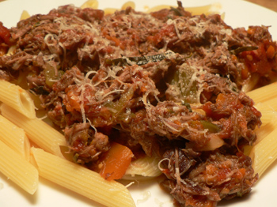

Lamb ragú
If it seems that I’ve been baking more than I’ve been cooking lately, that’s just an illusion. I continue to cook every night, but it’s almost always braised meat and vegetables. Be it chicken, beef, lamb, or pork, all I want in these dark days of winter is soft lusciousness, and I don’t need a recipe for it. I like to braise meat one day, eat a bit of it that night, and then shred what’s remaining into a sauce that feeds us for the following couple of nights, adding things here and there as they reach their limits in the crisper drawer.
But last night I followed a recipe that I found at Apartment Therapy several days ago and that I couldn’t get out of my head. It’s a simple dish of braised lamb and vegetables, for which you shred the lamb right at the end. Did you know that there really is something to shredding meat? I discovered it over time, that shredding meat and getting it wet it made the it seem moister all over again. Researching it in McGee, I found the following passage:
Shredding. Even if a tough roast has been cooked to the point that it has become tender but unpleasantly dry, the cook can restore a certain succulence to the meat by pulling it apart into small shreds and pouring over them the meat’s collected juices, or a sauce. A film of liquid clings to the surface of each shred and thus coats many fibers with some of their lost moisture. The finer the shredding, the greater the surface that can take up the liquid, and the moister the meat will seem.
This is so true! And if you shred meat finely when it’s already surrounded with liquid, you’ll have an extremely succulent and rich sauce. Such as this lamb ragu:

The only thing I’ll do differently next time is add something zippy right at the end, like a half cup of chopped olives or a minced garlic clove. It had a deep, wonderful savoriness, but it could have used a little kick. Still, though, this ragu was so good that I ended up ignoring my pasta and eventually just taking spoonfuls of it directly out of the pot. I loaded it up with rosemary and thyme (I didn’t have the called-for sage), and I cooked it for just over three hours. After feeding two hungry boys for dinner, there are still a good three cups of sauce left.
Lamb ragú (serves about six)
2 pounds stew lamb, cut in chunks
Salt and freshly ground black pepper
2 onions
4 sprigs fresh rosemary
3 tablespoons fresh sage
8 cloves garlic
1 big carrot, peeled
2 celery stalks
Olive oil
2 cups red wine
One 28-ounce cans peeled whole plum tomatoes
Liberally coat the lamb chunks with salt and pepper and set aside. Peel and coarsely chop the onions, and chop the garlic. Chop the carrot and celery. Preheat the oven to 275ºF.
Place an oven-proof Dutch oven or heavy stockpot over medium-high heat, and add olive oil to cover the bottom thinly. When oil is hot, add the lamb and brown deeply. Do this in batches if necessary.
When the meat is thoroughly dark, add the onions. Cook slowly over medium heat for about 10 minutes or until the onions are golden. Add rosemary and sage, garlic, carrot and celery. Reduce heat to medium-low and sauté until vegetables are softened, about 5 minutes.
Add wine and simmer until liquid has reduced by half, about 10 minutes. Add tomatoes and their juices. Simmer, covered, in the oven for 3 to 4 hours. The longer it cooks the more tender it will be. When ready to serve, go through with two forks and shred any remaining chunks.
Add a comment